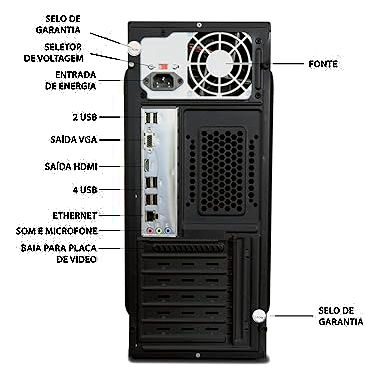
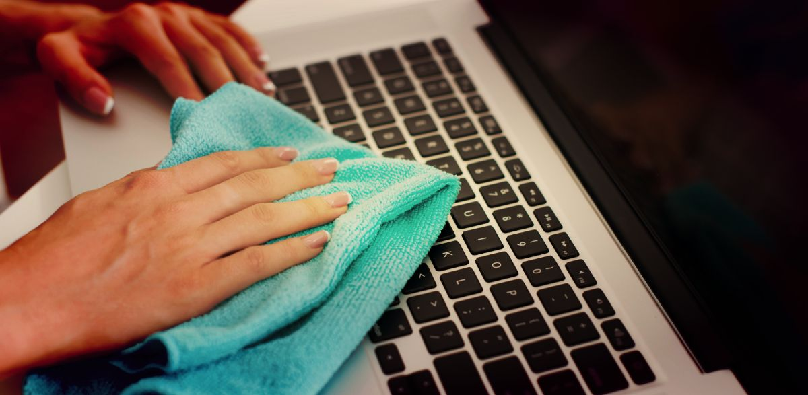
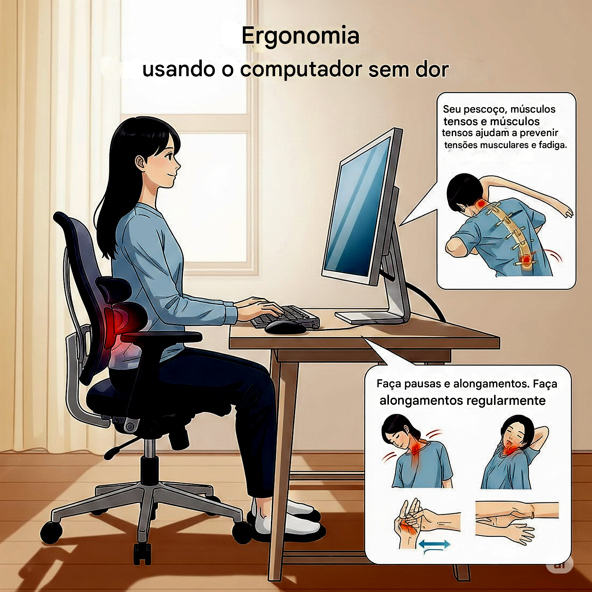

AULA 2
Conectando e Cuidando do Computador
Nesta aula, vamos aprender a conectar os principais cabos e dispositivos, além de dicas importantes para manter seu computador sempre funcionando bem e cuidar da sua saúde ao usá-lo.
Conexões Essenciais: Onde Tudo se Encaixa
Assim como um prédio tem portas e janelas, o computador tem "portas" para conectar outros dispositivos. Vamos conhecer as mais importantes:
- Portas USB: Para mouse, teclado, pendrives, celulares e muitos outros acessórios. São as mais comuns!
- HDMI/VGA: Para conectar o monitor ou a TV e ver a imagem do computador.
- Porta Ethernet: Para conectar o cabo de rede e ter internet mais rápida e estável.
- Conectores de Áudio: Para fones de ouvido, microfones e caixas de som.
- Conexão Wi-Fi: A internet sem fio! Permite que o computador se conecte à rede sem precisar de cabos.


Cuidando do Seu Computador: Limpeza e Organização
Para que seu computador dure mais e funcione bem, alguns cuidados são essenciais:
- Mantenha Limpo: Poeira e sujeira podem prejudicar. Use um pano macio para a tela e um pincel para o teclado.
- Evite Líquidos e Comida: Um derramamento pode ser fatal para os componentes internos.
- Boa Ventilação: Não cubra as saídas de ar do computador. Ele precisa "respirar" para não superaquecer.
- Desligue Corretamente: Sempre desligue o computador pelo sistema operacional, e não direto na tomada.
Ergonomia: Usando o Computador Sem Dores
Passar muito tempo no computador pode causar dores se você não se posicionar corretamente. Veja como evitar:
- Postura: Sente-se reto, com as costas apoiadas na cadeira.
- Monitor: A parte superior da tela deve estar na altura dos seus olhos, a uma distância de um braço.
- Teclado e Mouse: Mantenha os pulsos retos e os cotovelos próximos ao corpo.
- Pausas: A cada 60 minutos, levante-se, alongue-se e descanse os olhos por 5 minutos.
